Immune Profiling of COVID-19 Severity: A Cross-Sectional Analysis
Dataset: Stephenson et al., Nature Medicine 2021 (E-MTAB-10026)
Background
Stephenson et al. profiled peripheral blood mononuclear cells (PBMCs) from COVID-19 patients across severity groups and timepoints, providing insights into immune dynamics during disease progression.
Important Methodological Notes
This is an OBSERVATIONAL study, not a randomized trial:
Disease severity (Mild vs Severe) is an outcome, not a treatment assignment
Patients are not randomly assigned to severity groups
Differences between groups reflect disease biology, not causal treatment effects
We use sctrial’s infrastructure for structured comparisons, but interpret results as descriptive associations
Time axis considerations:
Days From Onset (DFO): Biological time since symptom onset - captures disease progression
Collection_Day: Calendar time since study enrollment - captures sampling schedule
These are fundamentally different; we use DFO for biological interpretability
Analysis strategy: Given limited longitudinal pairing in this dataset, we focus on cross-sectional comparisons between severity groups at each timepoint, which is the most statistically appropriate approach.
1. Setup and Configuration
[1]:
# Imports - consolidated in one cell
import warnings
warnings.filterwarnings('ignore', category=FutureWarning)
warnings.filterwarnings('ignore', category=UserWarning)
import numpy as np
import pandas as pd
import scipy.sparse as sp
import matplotlib.pyplot as plt
import seaborn as sns
import scanpy as sc
import statsmodels.formula.api as smf
from statsmodels.stats.multitest import multipletests
from scipy.stats import mannwhitneyu # Import here for use across notebook
from pathlib import Path
import urllib.request
import sctrial as st
import itertools
# Configuration constants
MIN_GENES_FOR_SCORE = 5
MIN_PARTICIPANTS_FOR_COMPARISON = 5
MIN_CELLS_PER_CELLTYPE = 100
SEED = 42
FDR_ALPHA = 0.25
pd.options.mode.chained_assignment = None
print(f"sctrial version: {st.__version__ if hasattr(st, '__version__') else 'dev'}")
sctrial version: 0.2.1.dev1
2. Data Loading and Processing
[2]:
# Dataset loaders and helpers (from sctrial)
from sctrial.datasets import load_stephenson_data, count_paired, categorize_celltype
[3]:
# Load data
adata = load_stephenson_data(force_reprocess=False)
print("\n=== Dataset Summary ===")
print(f"Cells: {adata.n_obs:,}")
print(f"Genes: {adata.n_vars:,}")
print(f"Severity groups: {adata.obs['severity'].unique().tolist()}")
print(f"DFO bins: {sorted(adata.obs['dfo_bin'].unique().tolist())}")
print(f"Cell types: {adata.obs['celltype'].nunique()}")
print(f"Participants: {adata.obs['participant_id'].nunique()}")
Loaded cached file: /Users/omarm/Documents/Research/projects/sc-trialdiff/data/processed/stephenson_covid19_v3.h5ad
205,202 cells, 24,929 genes
=== Dataset Summary ===
Cells: 205,202
Genes: 24,929
Severity groups: ['Severe', 'Mild']
DFO bins: ['DFO_0-7', 'DFO_15+', 'DFO_8-14']
Cell types: 50
Participants: 34
3. Sample Size Assessment
Before analysis, we assess sample sizes to determine appropriate statistical methods.
[4]:
# Sample sizes by severity and timepoint
sample_sizes = (
adata.obs
.groupby(["severity", "dfo_bin"], observed=True)["participant_id"]
.nunique()
.unstack(fill_value=0)
)
print("Participants per severity × DFO bin:")
display(sample_sizes)
# Check for longitudinal pairing
dfo_visits = ["DFO_0-7", "DFO_8-14"]
n_paired_dfo = count_paired(adata.obs, "dfo_bin", dfo_visits)
print("")
print(f"Longitudinal pairing (DFO 0-7 → 8-14): {n_paired_dfo} participants")
if n_paired_dfo < MIN_PARTICIPANTS_FOR_COMPARISON:
print("")
print(f"⚠️ WARNING: Only {n_paired_dfo} paired participants available.")
print(" Difference-in-Differences analysis requires ≥4 paired participants.")
print(" This notebook will focus on CROSS-SECTIONAL comparisons instead.")
CAN_DO_DID = False
else:
CAN_DO_DID = True
# Visualize sample sizes
fig, axes = plt.subplots(1, 3, figsize=(14, 4))
# Cells by severity
adata.obs["severity"].value_counts().plot(
kind="bar", ax=axes[0], color=["steelblue", "coral"]
)
axes[0].set_title("Cells by Severity")
axes[0].set_ylabel("Number of cells")
# Cells by DFO
adata.obs["dfo_bin"].value_counts().sort_index().plot(
kind="bar", ax=axes[1], color="teal"
)
axes[1].set_title("Cells by Days From Onset")
# Participants per group
sample_sizes.T.plot(kind="bar", ax=axes[2])
axes[2].set_title("Participants per Group")
axes[2].set_ylabel("Number of participants")
axes[2].legend(title="Severity")
plt.tight_layout()
plt.show()
Participants per severity × DFO bin:
| dfo_bin | DFO_0-7 | DFO_8-14 | DFO_15+ |
|---|---|---|---|
| severity | |||
| Mild | 8 | 11 | 4 |
| Severe | 2 | 5 | 4 |
Longitudinal pairing (DFO 0-7 → 8-14): 0 participants
⚠️ WARNING: Only 0 paired participants available.
Difference-in-Differences analysis requires ≥4 paired participants.
This notebook will focus on CROSS-SECTIONAL comparisons instead.
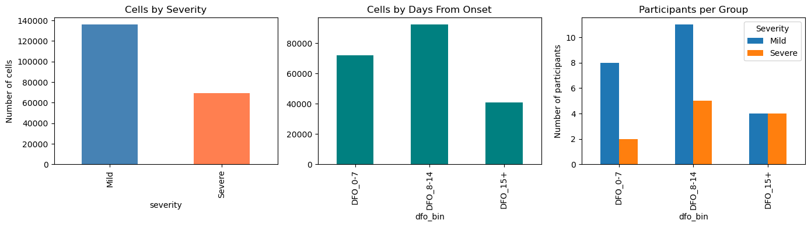
4. Study Design Configuration
We configure the comparison structure. Note: We use sctrial’s TrialDesign for convenience, but this is an observational comparison, not a randomized trial.
[5]:
# Add log1p-CPM normalization
if "log1p_cpm" not in adata.layers:
adata = st.add_log1p_cpm_layer(adata, counts_layer="counts", out_layer="log1p_cpm")
print("Added log1p_cpm layer")
# Define comparison design
# Note: We call Severe the "treated" group for sctrial compatibility,
# but this is purely for software purposes - there is no treatment!
design = st.TrialDesign(
participant_col="participant_id",
visit_col="dfo_bin",
arm_col="severity",
arm_treated="Severe", # Reference group for comparison
arm_control="Mild",
celltype_col="celltype",
)
# Available visits for analysis
available_visits = sorted(adata.obs["dfo_bin"].unique().tolist())
print(f"Available DFO bins: {available_visits}")
# Covariates - match actual column names in the dataset
covariate_mapping = {
"Age_interval": "age",
"Sex": "sex",
"Site": "site",
"Smoker": "smoker",
}
covariates = [c for c in covariate_mapping.keys() if c in adata.obs.columns]
print(f"Available covariates: {covariates}")
# Check covariate distributions
if covariates:
print("\nCovariate summary by severity:")
for cov in covariates[:3]: # Show first 3
print(f"\n{cov}:")
print(adata.obs.groupby("severity")[cov].value_counts().unstack(fill_value=0))
Added log1p_cpm layer
Available DFO bins: ['DFO_0-7', 'DFO_15+', 'DFO_8-14']
Available covariates: ['Age_interval', 'Sex', 'Site', 'Smoker']
Covariate summary by severity:
Age_interval:
Age_interval (20, 29] (30, 39] (40, 49] (50, 59] (60, 69] (70, 79] \
severity
Mild 7446 16252 22525 21651 35854 17798
Severe 0 5589 15433 32828 4164 2233
Age_interval (80, 89] (90, 99]
severity
Mild 14410 0
Severe 9019 0
Sex:
Sex Female Male
severity
Mild 84262 51674
Severe 49556 19710
Site:
Site Cambridge Ncl Sanger
severity
Mild 26277 87676 21983
Severe 6397 44275 18594
4.1 Baseline Covariate Balance (Treated vs Control)
Here we assess baseline covariate balance between severity groups at the earliest visit. Standardized mean differences (SMD) below 0.1 indicate good balance.
[6]:
# Baseline covariate balance (select visit with most balanced counts)
covariates = [c for c in ["Age_interval", "Sex", "Site"] if c in adata.obs.columns]
if covariates:
if "dfo_bin" in adata.obs.columns:
# Pick visit with max min(n_treated, n_control) at participant-level
visit_scores = []
for v in sorted(adata.obs["dfo_bin"].dropna().unique()):
sub = adata.obs[adata.obs["dfo_bin"] == v]
if design.participant_col in sub.columns:
counts = sub.groupby(design.arm_col)[design.participant_col].nunique()
else:
counts = sub.groupby(design.arm_col).size()
n_t = int(counts.get(design.arm_treated, 0))
n_c = int(counts.get(design.arm_control, 0))
visit_scores.append((v, n_t, n_c, min(n_t, n_c)))
# choose visit with largest min(n_t, n_c); tie-breaker by total participants
visit_scores.sort(key=lambda x: (x[3], x[1]+x[2]), reverse=True)
visit0, n_t, n_c, _ = visit_scores[0]
print(f"Selected baseline visit: {visit0} (treated={n_t}, control={n_c})")
try:
balance = st.check_covariate_balance(adata, design, covariates, visit=visit0)
display(balance)
if not balance.empty:
# Numeric covariates: one figure
num_bal = balance[balance["level"].isna()].copy()
if not num_bal.empty:
plt.figure(figsize=(6, max(2, 0.4 * len(num_bal))))
sns.barplot(data=num_bal, y="covariate", x="smd", color="steelblue")
plt.axvline(0.1, color="red", linestyle="--", linewidth=1)
plt.axvline(-0.1, color="red", linestyle="--", linewidth=1)
plt.title(f"Numeric covariate balance at {visit0}")
plt.xlabel("Standardized Mean Difference (SMD)")
plt.ylabel("Covariate")
plt.tight_layout()
plt.show()
# Categorical covariates: one panel per covariate
cat_bal = balance[balance["level"].notna()].copy()
for cov in cat_bal["covariate"].unique():
sub = cat_bal[cat_bal["covariate"] == cov].copy()
sub = sub.reindex(sub["smd"].abs().sort_values(ascending=False).index)
plt.figure(figsize=(6, max(2, 0.35 * len(sub))))
sns.barplot(data=sub, y="level", x="smd", color="orchid")
plt.axvline(0.1, color="red", linestyle="--", linewidth=1)
plt.axvline(-0.1, color="red", linestyle="--", linewidth=1)
plt.title(f"Categorical balance: {cov} at {visit0}")
plt.xlabel("Standardized Mean Difference (SMD)")
plt.ylabel("Level")
plt.tight_layout()
plt.show()
except Exception as e:
print(f"Covariate balance check failed: {e}")
else:
print("dfo_bin not found; skipping covariate balance check.")
else:
print("No baseline covariates available for balance checking.")
Selected baseline visit: DFO_8-14 (treated=5, control=11)
| covariate | level | mean_treated | mean_control | smd | n_treated | n_control | balanced | |
|---|---|---|---|---|---|---|---|---|
| 0 | Age_interval | (50, 59] | 0.4 | 0.181818 | 0.480384 | 5 | 11 | False |
| 1 | Age_interval | (30, 39] | 0.2 | 0.181818 | 0.046262 | 5 | 11 | True |
| 2 | Age_interval | (70, 79] | 0.0 | 0.090909 | -0.436436 | 5 | 11 | False |
| 3 | Age_interval | (40, 49] | 0.2 | 0.272727 | -0.171184 | 5 | 11 | False |
| 4 | Age_interval | (60, 69] | 0.2 | 0.272727 | -0.171184 | 5 | 11 | False |
| 5 | Sex | Female | 0.8 | 0.636364 | 0.363729 | 5 | 11 | False |
| 6 | Sex | Male | 0.2 | 0.363636 | -0.363729 | 5 | 11 | False |
| 7 | Site | Sanger | 0.4 | 0.090909 | 0.718221 | 5 | 11 | False |
| 8 | Site | Cambridge | 0.2 | 0.545455 | -0.714442 | 5 | 11 | False |
| 9 | Site | Ncl | 0.4 | 0.363636 | 0.074848 | 5 | 11 | True |
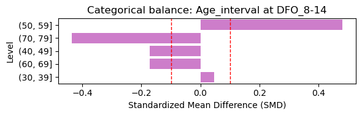
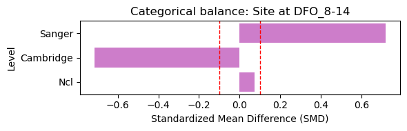
5. Cell Type Quality Control
Filter to well-represented cell types for robust analysis.
[7]:
# Cell type counts
ct_counts = adata.obs["celltype"].value_counts()
print(f"Total cell types: {len(ct_counts)}")
# Filter to well-represented types
valid_celltypes = ct_counts[ct_counts >= MIN_CELLS_PER_CELLTYPE].index.tolist()
print(f"Cell types with ≥{MIN_CELLS_PER_CELLTYPE} cells: {len(valid_celltypes)}")
# Show top cell types
print("\nTop 15 cell types:")
display(ct_counts.head(15).to_frame("n_cells"))
# Visualize
fig, ax = plt.subplots(figsize=(12, 5))
ct_counts.head(20).plot(kind="bar", ax=ax, color="steelblue")
ax.axhline(MIN_CELLS_PER_CELLTYPE, color="red", linestyle="--", label=f"Min threshold ({MIN_CELLS_PER_CELLTYPE})")
ax.set_title("Cell Type Abundance")
ax.set_ylabel("Number of cells")
ax.legend()
plt.xticks(rotation=45, ha="right")
plt.tight_layout()
plt.show()
Total cell types: 50
Cell types with ≥100 cells: 41
Top 15 cell types:
| n_cells | |
|---|---|
| celltype | |
| NK_16hi | 29417 |
| CD14_mono | 20207 |
| CD4.Naive | 19076 |
| CD4.CM | 18804 |
| B_naive | 17063 |
| CD83_CD14_mono | 16326 |
| CD8.TE | 14366 |
| CD8.Naive | 10469 |
| CD4.Tfh | 5196 |
| gdT | 4938 |
| CD8.EM | 4864 |
| Platelets | 4824 |
| CD4.IL22 | 4817 |
| CD16_mono | 4790 |
| MAIT | 3475 |
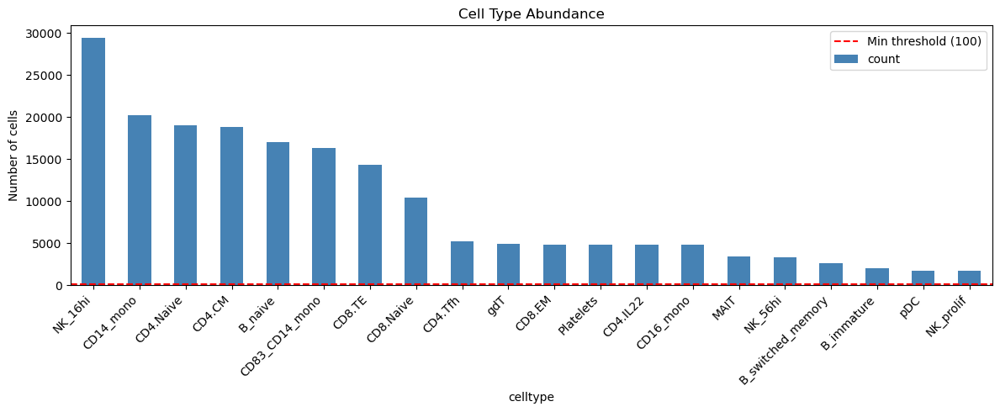
6. UMAP Visualization
[8]:
# Compute UMAP if missing
if "X_umap" not in adata.obsm:
print("Computing UMAP...")
sc.pp.pca(adata)
sc.pp.neighbors(adata)
sc.tl.umap(adata)
# Global UMAP colored by cell type
fig, axes = plt.subplots(1, 2, figsize=(16, 6))
sc.pl.umap(adata, color="celltype", ax=axes[0], show=False,
legend_loc="on data", legend_fontsize=6, title="Cell Types")
sc.pl.umap(adata, color="severity", ax=axes[1], show=False,
palette=["steelblue", "coral"], title="Severity")
plt.tight_layout()
plt.show()
# UMAP by severity and DFO
fig, axes = plt.subplots(2, 3, figsize=(15, 10))
for i, severity in enumerate(["Mild", "Severe"]):
for j, dfo in enumerate(["DFO_0-7", "DFO_8-14", "DFO_15+"]):
ax = axes[i, j]
mask = (adata.obs["severity"] == severity) & (adata.obs["dfo_bin"] == dfo)
if mask.sum() > 0:
sub = adata[mask].copy()
sc.pl.umap(sub, color="celltype", ax=ax, show=False,
legend_loc="none", title=f"{severity} - {dfo} (n={mask.sum():,})")
else:
ax.set_title(f"{severity} - {dfo} (no cells)")
ax.axis("off")
plt.tight_layout()
plt.show()
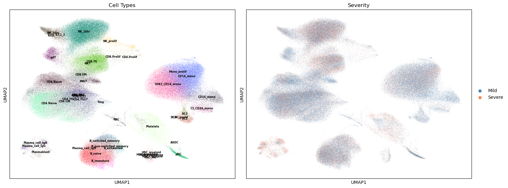
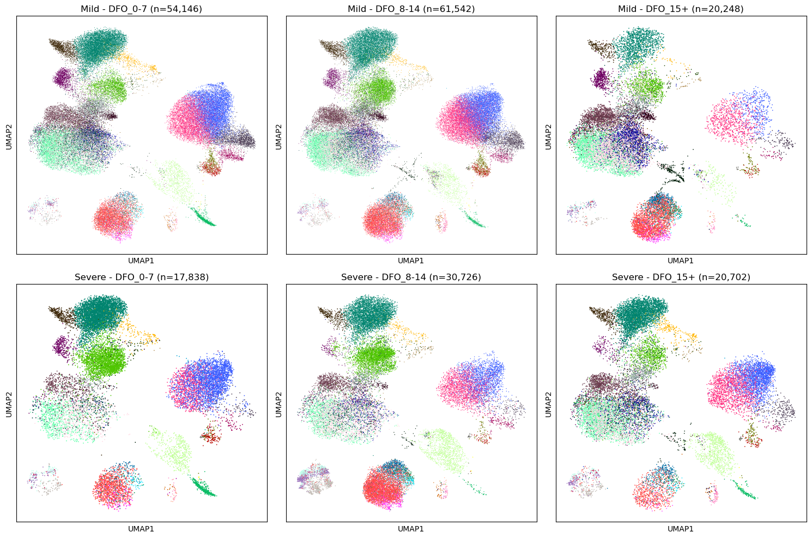
7. COVID-19 Immune Signatures
We define biologically relevant gene signatures for COVID-19 immune profiling, including:
Interferon response: Key antiviral pathway, often elevated in severe disease
Inflammation: S100 alarmins and cytokines associated with cytokine storm
Cytotoxicity: NK/CD8 T cell function, important for viral clearance
T cell exhaustion: Dysfunction markers elevated in severe/prolonged infection
Myeloid activation: Monocyte/macrophage markers, drivers of pathology
[9]:
available_genes = set(adata.var_names)
# COVID-19 relevant gene signatures
gene_signatures = {
"IFN_Response": [
"ISG15", "IFI6", "IFIT1", "IFIT2", "IFIT3", "MX1", "MX2",
"STAT1", "STAT2", "OAS1", "OAS2", "OAS3", "IRF7", "IFITM1", "IFITM3"
],
"Inflammation": [
"S100A8", "S100A9", "S100A12", "LYZ", "VCAN", "IL1B",
"CXCL8", "TNF", "NFKBIA", "CCL2", "CCL3", "CCL4"
],
"Cytotoxicity": [
"GZMB", "GZMA", "GZMH", "GZMK", "PRF1", "GNLY", "NKG7",
"KLRD1", "KLRB1", "IFNG"
],
"T_Cell_Exhaustion": [
"PDCD1", "LAG3", "HAVCR2", "TIGIT", "CTLA4", "TOX", "ENTPD1"
],
"Myeloid_Activation": [
"CD14", "FCGR3A", "CD68", "MARCO", "MSR1", "CD163",
"CTSS", "CST3", "LGALS3", "AIF1"
],
"B_Cell_Activation": [
"MS4A1", "CD19", "CD79A", "CD79B", "BANK1", "CD74",
"HLA-DRA", "HLA-DRB1", "IGHM", "IGHG1"
],
}
# Filter to available genes and report coverage
print("Gene signature coverage:")
print("-" * 50)
filtered_signatures = {}
for name, genes in gene_signatures.items():
found = [g for g in genes if g in available_genes]
pct = len(found) / len(genes) * 100
print(f"{name}: {len(found)}/{len(genes)} genes ({pct:.0f}%)")
if len(found) >= MIN_GENES_FOR_SCORE:
filtered_signatures[name] = found
else:
print(f" ⚠️ Skipping (need ≥{MIN_GENES_FOR_SCORE} genes)")
# Score gene sets using z-mean method (accounts for different expression scales)
if filtered_signatures:
adata = st.score_gene_sets(
adata,
filtered_signatures,
layer="log1p_cpm",
method="zmean", # Z-score normalization for fair weighting
prefix="sig_"
)
print(f"\n✓ Scored {len(filtered_signatures)} signatures")
# Get signature columns
signature_cols = [c for c in adata.obs.columns if c.startswith("sig_")]
print(f"\nSignature scores available: {signature_cols}")
Gene signature coverage:
--------------------------------------------------
IFN_Response: 15/15 genes (100%)
Inflammation: 12/12 genes (100%)
Cytotoxicity: 10/10 genes (100%)
T_Cell_Exhaustion: 7/7 genes (100%)
Myeloid_Activation: 10/10 genes (100%)
B_Cell_Activation: 10/10 genes (100%)
✓ Scored 6 signatures
Signature scores available: ['sig_IFN_Response', 'sig_Inflammation', 'sig_Cytotoxicity', 'sig_T_Cell_Exhaustion', 'sig_Myeloid_Activation', 'sig_B_Cell_Activation']
8. Cross-Sectional Comparisons: Severity Differences at Each Timepoint
This is the primary analysis. We compare immune signatures between Mild and Severe patients at each DFO timepoint, using:
Participant-level aggregation (to avoid pseudoreplication)
Cell-type adjustment (to account for compositional differences)
FDR correction for multiple testing
[10]:
# Run comparisons at each timepoint using sctrial's built-in function
# This properly aggregates to participant level and handles the statistics correctly
print("="*60)
print("CROSS-SECTIONAL ANALYSIS: Severe vs Mild at each DFO bin")
print("="*60)
print("\nPositive beta = higher in Severe; Negative beta = higher in Mild")
print("Using participant-level aggregation to avoid pseudoreplication\n")
all_results = []
for visit in available_visits:
print(f"\n{visit}:")
# Check sample size first
ad_visit = adata[adata.obs["dfo_bin"] == visit]
n_per_group = ad_visit.obs.groupby("severity")["participant_id"].nunique()
if n_per_group.min() < MIN_PARTICIPANTS_FOR_COMPARISON:
print(f" Skipped: Insufficient participants (Mild={n_per_group.get('Mild', 0)}, Severe={n_per_group.get('Severe', 0)})")
continue
# Use sctrial's built-in between_arm_comparison
# This properly aggregates to participant level
res = st.between_arm_comparison(
adata,
visit=visit,
features=signature_cols,
design=design,
aggregate="participant_visit",
standardize=True,
method="ols",
)
if not res.empty:
# Rename columns for consistency
res = res.rename(columns={"beta_arm": "beta", "p_arm": "p_value", "FDR_arm": "fdr"})
res["timepoint"] = visit
all_results.append(res)
# Display results
display_cols = ["feature", "beta", "p_value", "fdr", "n_units"]
display(res[display_cols].round(4))
# Highlight significant
sig = res[res["fdr"] < FDR_ALPHA]
if not sig.empty:
print(f" Significant (FDR<{FDR_ALPHA}): {sig['feature'].tolist()}")
# Combine results
if all_results:
combined_results = pd.concat(all_results, ignore_index=True)
else:
combined_results = pd.DataFrame()
============================================================
CROSS-SECTIONAL ANALYSIS: Severe vs Mild at each DFO bin
============================================================
Positive beta = higher in Severe; Negative beta = higher in Mild
Using participant-level aggregation to avoid pseudoreplication
DFO_0-7:
Skipped: Insufficient participants (Mild=8, Severe=2)
DFO_15+:
Skipped: Insufficient participants (Mild=4, Severe=4)
DFO_8-14:
| feature | beta | p_value | fdr | n_units | |
|---|---|---|---|---|---|
| 0 | sig_IFN_Response | -0.0685 | 0.9041 | 0.9710 | 16 |
| 1 | sig_Inflammation | -0.0576 | 0.9192 | 0.9710 | 16 |
| 2 | sig_Cytotoxicity | 0.1428 | 0.8014 | 0.9710 | 16 |
| 3 | sig_T_Cell_Exhaustion | 0.7137 | 0.1953 | 0.5858 | 16 |
| 4 | sig_Myeloid_Activation | 0.0206 | 0.9710 | 0.9710 | 16 |
| 5 | sig_B_Cell_Activation | 1.0749 | 0.0414 | 0.2485 | 16 |
Significant (FDR<0.25): ['sig_B_Cell_Activation']
9. Visualization of Severity Differences
[11]:
# Visualize signature distributions by severity and timepoint
fig, axes = plt.subplots(2, 3, figsize=(15, 10))
for i, sig in enumerate(signature_cols[:6]):
ax = axes.flat[i]
# Aggregate to participant level for cleaner visualization
df_plot = (
adata.obs
.groupby(["participant_id", "severity", "dfo_bin"], observed=True)[sig]
.mean()
.reset_index()
)
sns.boxplot(
data=df_plot, x="dfo_bin", y=sig, hue="severity",
palette={"Mild": "steelblue", "Severe": "coral"},
ax=ax
)
ax.set_title(sig.replace("sig_", ""))
ax.set_xlabel("Days From Onset")
ax.set_ylabel("Score (z-mean)")
if i > 0:
ax.get_legend().remove()
plt.tight_layout()
plt.show()
# Heatmap of effect sizes
if not combined_results.empty:
pivot = combined_results.pivot(index="feature", columns="timepoint", values="beta")
plt.figure(figsize=(8, 6))
sns.heatmap(
pivot, cmap="RdBu_r", center=0, annot=True, fmt=".2f",
cbar_kws={"label": "Effect size (Severe - Mild)"}
)
plt.title("Severity Effect Sizes Across Timepoints")
plt.tight_layout()
plt.show()
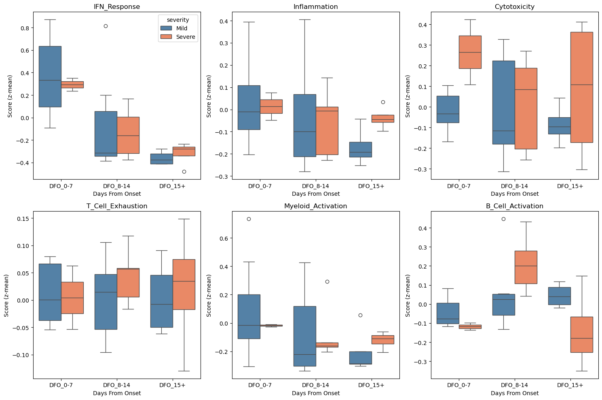

10. Cell-Type Specific Analysis
Examine severity differences within specific immune cell populations.
[12]:
# Focus on major immune populations
# Map fine cell types to major lineages for robust analysis
adata.obs["lineage"] = adata.obs["celltype"].apply(categorize_celltype)
print("Lineage distribution:")
print(adata.obs["lineage"].value_counts())
# Compare signatures within key lineages
# IMPORTANT: We must aggregate to participant level to avoid pseudoreplication
focus_lineages = ["CD4_T", "CD8_T", "Monocytes", "NK"]
focus_visit = "DFO_0-7" # Early disease
print("")
print(f"=== Cell-Type Specific Analysis at {focus_visit} ===")
print("Note: Using participant-level aggregation (not cell-level) for valid statistics")
print("")
lineage_results = []
for lineage in focus_lineages:
ad_sub = adata[(adata.obs["lineage"] == lineage) & (adata.obs["dfo_bin"] == focus_visit)].copy()
if ad_sub.n_obs < 100:
print(f"{lineage}: Insufficient cells ({ad_sub.n_obs})")
continue
n_per_group = ad_sub.obs.groupby("severity")["participant_id"].nunique()
if n_per_group.min() < 3:
print(f"{lineage}: Insufficient participants")
continue
print(f"{lineage} (n={ad_sub.n_obs:,} cells, {n_per_group.sum()} participants):")
# CORRECT: Aggregate to participant level FIRST, then test
participant_means = (
ad_sub.obs
.groupby(["participant_id", "severity"], observed=True)[signature_cols[:4]]
.mean()
.reset_index()
)
for sig in signature_cols[:4]:
mild_vals = participant_means.loc[participant_means["severity"] == "Mild", sig]
severe_vals = participant_means.loc[participant_means["severity"] == "Severe", sig]
# Now each value is one participant, not one cell
stat, pval = mannwhitneyu(mild_vals, severe_vals, alternative="two-sided")
diff = severe_vals.mean() - mild_vals.mean()
lineage_results.append({
"lineage": lineage,
"signature": sig.replace("sig_", ""),
"diff": diff,
"p_value": pval,
"n_mild": len(mild_vals),
"n_severe": len(severe_vals),
})
if lineage_results:
df_lineage = pd.DataFrame(lineage_results)
df_lineage["fdr"] = multipletests(df_lineage["p_value"], method="fdr_bh")[1]
print("")
print("Results (participant-level Mann-Whitney U):")
display(df_lineage.round(4))
# Pivot for heatmap
pivot = df_lineage.pivot(index="signature", columns="lineage", values="diff")
plt.figure(figsize=(8, 5))
sns.heatmap(pivot, cmap="RdBu_r", center=0, annot=True, fmt=".2f")
plt.title(f"Severity Differences by Cell Type ({focus_visit})\nPositive = higher in Severe")
plt.tight_layout()
plt.show()
Lineage distribution:
lineage
CD4_T 49451
CD8_T 46464
Other 38546
NK 35643
Monocytes 26237
B_cells 4827
DCs 4034
Name: count, dtype: int64
=== Cell-Type Specific Analysis at DFO_0-7 ===
Note: Using participant-level aggregation (not cell-level) for valid statistics
CD4_T: Insufficient participants
CD8_T: Insufficient participants
Monocytes: Insufficient participants
NK: Insufficient participants
11. Cell Type Abundance Differences
Compare cell type composition between severity groups.
[13]:
# Calculate cell type proportions per participant
# Note: Each row in 'props' after grouping is one participant-visit-lineage combination
# When we test, each participant contributes ONE proportion value per lineage
props = (
adata.obs
.groupby(["participant_id", "severity", "dfo_bin", "lineage"], observed=True)
.size()
.reset_index(name="n")
)
totals = props.groupby(["participant_id", "dfo_bin"])["n"].transform("sum")
props["proportion"] = props["n"] / totals
# Visualize
fig, axes = plt.subplots(1, 2, figsize=(14, 5))
# By severity
props_by_sev = props.groupby(["severity", "lineage"])["proportion"].mean().unstack()
props_by_sev.plot(kind="bar", ax=axes[0], width=0.8)
axes[0].set_title("Cell Type Proportions by Severity")
axes[0].set_ylabel("Mean Proportion")
axes[0].legend(title="Lineage", bbox_to_anchor=(1.02, 1))
# Monocyte proportion over time
mono_props = props[props["lineage"] == "Monocytes"].copy()
sns.boxplot(data=mono_props, x="dfo_bin", y="proportion", hue="severity",
palette={"Mild": "steelblue", "Severe": "coral"}, ax=axes[1])
axes[1].set_title("Monocyte Proportion by Severity and Time")
axes[1].set_ylabel("Proportion")
plt.tight_layout()
plt.show()
# Statistical test for abundance differences
# CORRECT: Each observation in props_early is already at participant level
# so Mann-Whitney U is appropriate here (no pseudoreplication)
print("\nAbundance differences (Severe vs Mild) at DFO 0-7:")
print("Note: Each data point = one participant's cell type proportion")
print("-" * 50)
props_early = props[props["dfo_bin"] == "DFO_0-7"]
abundance_results = []
for lineage in ["Monocytes", "CD8_T", "NK", "B_cells"]:
sub = props_early[props_early["lineage"] == lineage]
mild = sub.loc[sub["severity"] == "Mild", "proportion"]
severe = sub.loc[sub["severity"] == "Severe", "proportion"]
if len(mild) >= 3 and len(severe) >= 3:
stat, pval = mannwhitneyu(mild, severe, alternative="two-sided")
diff = severe.mean() - mild.mean()
abundance_results.append({
"lineage": lineage,
"diff": diff,
"p_value": pval,
"n_mild": len(mild),
"n_severe": len(severe),
})
print(f"{lineage}: diff={diff:+.3f}, p={pval:.4f} (n_mild={len(mild)}, n_severe={len(severe)})")
if abundance_results:
df_abund = pd.DataFrame(abundance_results)
df_abund["fdr"] = multipletests(df_abund["p_value"], method="fdr_bh")[1]
print(f"\nFDR-corrected results:")
display(df_abund.round(4))
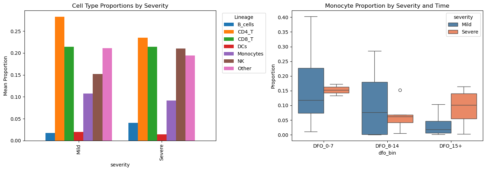
Abundance differences (Severe vs Mild) at DFO 0-7:
Note: Each data point = one participant's cell type proportion
--------------------------------------------------
12. Individual Gene Analysis
Examine specific genes of interest for COVID-19.
[14]:
# Key COVID-19 genes
covid_genes = [
"ISG15", "IFIT1", "MX1", # IFN response
"S100A8", "S100A9", "S100A12", # Alarmins
"GZMB", "PRF1", "NKG7", # Cytotoxicity
"IL1B", "TNF", "CXCL8", # Cytokines
]
covid_genes = [g for g in covid_genes if g in adata.var_names]
print(f"Analyzing {len(covid_genes)} COVID-relevant genes")
# Extract expression for visualization
gene_expr = pd.DataFrame(
adata[:, covid_genes].layers["log1p_cpm"].toarray() if sp.issparse(adata[:, covid_genes].layers["log1p_cpm"])
else adata[:, covid_genes].layers["log1p_cpm"],
columns=covid_genes,
index=adata.obs_names
)
gene_expr = gene_expr.join(adata.obs[["severity", "dfo_bin", "participant_id", "lineage"]])
# Aggregate to participant level
gene_means = gene_expr.groupby(["participant_id", "severity", "dfo_bin"])[covid_genes].mean().reset_index()
# Visualize key genes
fig, axes = plt.subplots(2, 3, figsize=(14, 8))
for i, gene in enumerate(covid_genes[:6]):
ax = axes.flat[i]
sns.boxplot(
data=gene_means, x="dfo_bin", y=gene, hue="severity",
palette={"Mild": "steelblue", "Severe": "coral"}, ax=ax
)
ax.set_title(gene)
ax.set_xlabel("")
if i > 0:
ax.get_legend().remove()
plt.tight_layout()
plt.show()
# Dotplot of genes by cell type
if len(covid_genes) > 0:
sc.pl.dotplot(
adata[adata.obs["lineage"].isin(["Monocytes", "CD8_T", "NK", "CD4_T"])],
var_names=covid_genes[:8],
groupby="lineage",
standard_scale="var",
title="COVID-19 Genes by Cell Type"
)
Analyzing 12 COVID-relevant genes
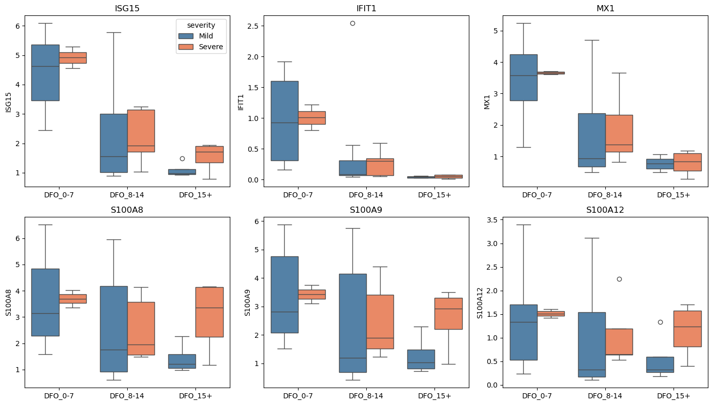
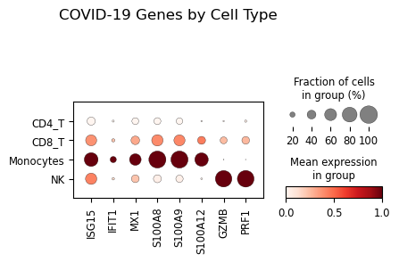
13. Advanced Statistical Analyses
This section demonstrates statistical tools even for cross-sectional observational data:
Effect sizes: Cohen’s d for severity group comparisons
Power analysis: Sample size planning for future studies
Effective sample size: Understanding clustering effects
13.1 Effect Sizes for Cross-Sectional Comparisons
Effect sizes quantify the magnitude of differences between Mild and Severe cases.
[15]:
print("=" * 60)
print("EFFECT SIZE ANALYSIS (Cross-Sectional)")
print("=" * 60)
if signature_cols:
# Calculate effect sizes for severity comparison at each timepoint
effect_results = []
for visit in available_visits:
ad_visit = adata[adata.obs["dfo_bin"] == visit]
# Aggregate to participant level
df_agg = (
ad_visit.obs
.groupby(["participant_id", "severity"], observed=True)[signature_cols]
.mean()
.reset_index()
)
for sig in signature_cols:
mild_vals = df_agg.loc[df_agg["severity"] == "Mild", sig].dropna().values
severe_vals = df_agg.loc[df_agg["severity"] == "Severe", sig].dropna().values
if len(mild_vals) >= 3 and len(severe_vals) >= 3:
# Cohen's d and Hedge's g
d = st.cohens_d(severe_vals, mild_vals) # Positive = higher in Severe
g = st.hedges_g(severe_vals, mild_vals)
# Bootstrap CI (returns: effect_size, ci_lower, ci_upper)
try:
_, ci_low, ci_high = st.bootstrap_effect_size_ci(
severe_vals, mild_vals,
n_boot=999,
alpha=0.05,
seed=SEED
)
except Exception:
ci_low, ci_high = np.nan, np.nan
effect_results.append({
"timepoint": visit,
"feature": sig,
"cohens_d": d,
"hedges_g": g,
"ci_lower": ci_low,
"ci_upper": ci_high,
"n_mild": len(mild_vals),
"n_severe": len(severe_vals),
})
if effect_results:
df_effect = pd.DataFrame(effect_results)
print("\nEffect sizes (Severe vs Mild):")
print(" Positive = higher in Severe, Negative = higher in Mild")
print("")
display(df_effect.round(3))
# Heatmap of effect sizes
pivot = df_effect.pivot(index="feature", columns="timepoint", values="hedges_g")
plt.figure(figsize=(8, 6))
sns.heatmap(
pivot, cmap="RdBu_r", center=0, annot=True, fmt=".2f",
cbar_kws={"label": "Hedge's g"}
)
plt.title("Effect Sizes: Severe vs Mild by Timepoint")
plt.tight_layout()
plt.show()
# Forest plot for one timepoint
visit_data = df_effect[df_effect["timepoint"] == "DFO_8-14"]
if not visit_data.empty:
fig, ax = plt.subplots(figsize=(8, 5))
y_pos = np.arange(len(visit_data))
ax.barh(y_pos, visit_data["hedges_g"], xerr=[
visit_data["hedges_g"] - visit_data["ci_lower"],
visit_data["ci_upper"] - visit_data["hedges_g"]
], capsize=5, color=["coral" if g > 0 else "steelblue" for g in visit_data["hedges_g"]])
ax.axvline(0, color="black", linewidth=0.5)
ax.set_yticks(y_pos)
ax.set_yticklabels(visit_data["feature"])
ax.set_xlabel("Hedge's g (95% CI)")
ax.set_title("Effect Sizes at DFO 8-14 (Severe vs Mild)")
# Reference lines
for thresh in [-0.8, -0.5, -0.2, 0.2, 0.5, 0.8]:
ax.axvline(thresh, color="gray", linestyle=":", alpha=0.5)
plt.tight_layout()
plt.show()
else:
print("No signature columns for effect size analysis.")
============================================================
EFFECT SIZE ANALYSIS (Cross-Sectional)
============================================================
Effect sizes (Severe vs Mild):
Positive = higher in Severe, Negative = higher in Mild
| timepoint | feature | cohens_d | hedges_g | ci_lower | ci_upper | n_mild | n_severe | |
|---|---|---|---|---|---|---|---|---|
| 0 | DFO_15+ | sig_IFN_Response | 0.453 | 0.393 | -0.730 | 4.211 | 4 | 4 |
| 1 | DFO_15+ | sig_Inflammation | 1.787 | 1.552 | 0.527 | 5.781 | 4 | 4 |
| 2 | DFO_15+ | sig_Cytotoxicity | 0.649 | 0.564 | -1.608 | 5.716 | 4 | 4 |
| 3 | DFO_15+ | sig_T_Cell_Exhaustion | 0.195 | 0.170 | -1.176 | 2.273 | 4 | 4 |
| 4 | DFO_15+ | sig_Myeloid_Activation | 0.627 | 0.545 | -0.630 | 12.711 | 4 | 4 |
| 5 | DFO_15+ | sig_B_Cell_Activation | -1.185 | -1.029 | -4.995 | 0.038 | 4 | 4 |
| 6 | DFO_8-14 | sig_IFN_Response | -0.066 | -0.063 | -0.772 | 1.212 | 11 | 5 |
| 7 | DFO_8-14 | sig_Inflammation | -0.056 | -0.053 | -0.884 | 1.050 | 11 | 5 |
| 8 | DFO_8-14 | sig_Cytotoxicity | 0.138 | 0.131 | -0.791 | 1.333 | 11 | 5 |
| 9 | DFO_8-14 | sig_T_Cell_Exhaustion | 0.734 | 0.693 | -0.150 | 1.941 | 11 | 5 |
| 10 | DFO_8-14 | sig_Myeloid_Activation | 0.020 | 0.019 | -0.785 | 1.062 | 11 | 5 |
| 11 | DFO_8-14 | sig_B_Cell_Activation | 1.211 | 1.145 | 0.164 | 3.558 | 11 | 5 |
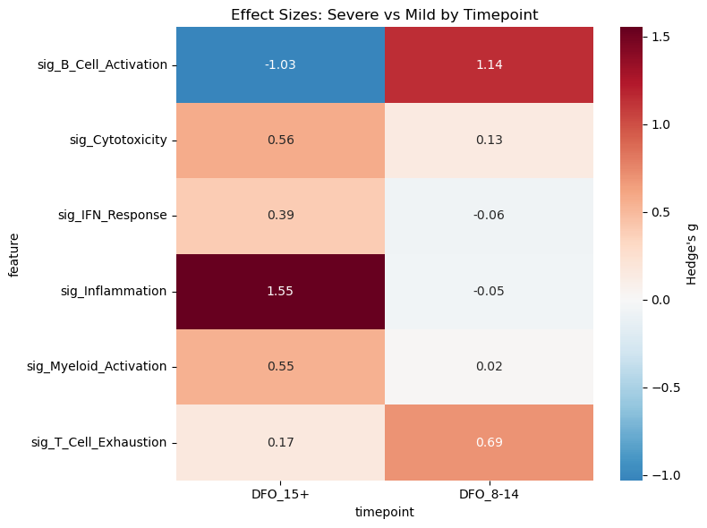
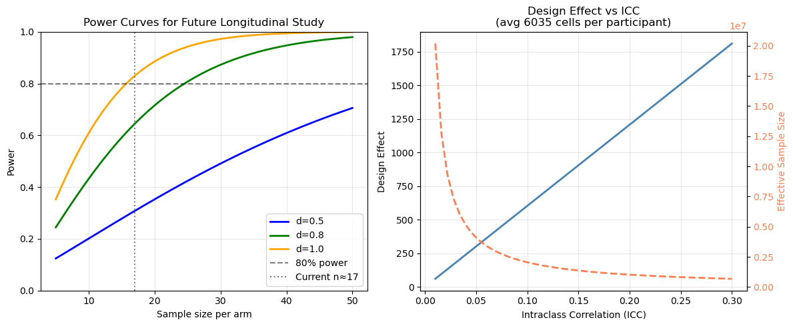
13.2 Power Analysis
Power analysis helps understand what effect sizes this study could detect and plan future longitudinal studies.
[16]:
print("=" * 60)
print("POWER ANALYSIS")
print("=" * 60)
# Current sample sizes by group
n_per_group = (
adata.obs
.groupby(["severity", "dfo_bin"], observed=True)["participant_id"]
.nunique()
)
print("\nParticipants per group:")
display(n_per_group.unstack())
# Get typical sample sizes
n_mild = adata.obs[adata.obs["severity"] == "Mild"]["participant_id"].nunique()
n_severe = adata.obs[adata.obs["severity"] == "Severe"]["participant_id"].nunique()
n_avg = (n_mild + n_severe) / 2
print(f"\nOverall: {n_mild} Mild, {n_severe} Severe participants")
print(f"Average per group: {n_avg:.0f}")
# Power with current sample
print(f"\nPower with current sample size (n≈{n_avg:.0f} per arm):")
for effect_size in [0.5, 0.8, 1.0, 1.5]:
power = st.power_did(n_per_group=int(n_avg), effect_size=effect_size)
print(f" Effect size d={effect_size}: {power:.1%} power")
# Sample size needed for longitudinal DiD
print("\nSample size for longitudinal DiD (80% power):")
print(" (Future study planning)")
for effect_size in [0.5, 0.8, 1.0]:
n_needed = st.sample_size_did(effect_size=effect_size, power=0.80)
print(f" Effect size d={effect_size}: {n_needed} per arm ({2*n_needed} total)")
# Power curve visualization
fig, axes = plt.subplots(1, 2, figsize=(12, 5))
# Power curves
n_range = np.arange(5, 51)
for effect_size, color in [(0.5, "blue"), (0.8, "green"), (1.0, "orange")]:
powers = [st.power_did(n_per_group=n, effect_size=effect_size) for n in n_range]
axes[0].plot(n_range, powers, label=f"d={effect_size}", color=color, linewidth=2)
axes[0].axhline(0.8, color="black", linestyle="--", alpha=0.5, label="80% power")
axes[0].axvline(n_avg, color="gray", linestyle=":", label=f"Current n≈{n_avg:.0f}")
axes[0].set_xlabel("Sample size per arm")
axes[0].set_ylabel("Power")
axes[0].set_title("Power Curves for Future Longitudinal Study")
axes[0].legend(loc="lower right")
axes[0].set_ylim(0, 1)
axes[0].grid(True, alpha=0.3)
# Effective sample size illustration
total_cells = adata.n_obs
cells_per_pt = adata.obs.groupby("participant_id").size().mean()
print(f"\nAverage cells per participant: {cells_per_pt:.0f}")
iccs = np.linspace(0.01, 0.30, 50)
design_effects = [st.design_effect(cells_per_pt, icc) for icc in iccs]
effective_ns = [st.effective_sample_size(total_cells, cells_per_pt, icc) for icc in iccs]
axes[1].plot(iccs, design_effects, linewidth=2, color="steelblue")
axes[1].set_xlabel("Intraclass Correlation (ICC)")
axes[1].set_ylabel("Design Effect")
axes[1].set_title(f"Design Effect vs ICC\n(avg {cells_per_pt:.0f} cells per participant)")
axes[1].grid(True, alpha=0.3)
# Add effective n on secondary axis
ax2 = axes[1].twinx()
ax2.plot(iccs, effective_ns, linewidth=2, color="coral", linestyle="--")
ax2.set_ylabel("Effective Sample Size", color="coral")
ax2.tick_params(axis='y', labelcolor='coral')
plt.tight_layout()
plt.show()
print("\n" + "=" * 60)
print("KEY INSIGHTS")
print("=" * 60)
print(f"""
1. Cross-sectional comparison:
- Current sample provides good power for medium-large effects
- Participant-level aggregation is critical for valid inference
2. Longitudinal limitation:
- Only {n_paired_dfo} participants have paired observations
- Future studies need ≥10 paired per arm for DiD
3. Cell-level clustering:
- With ICC=0.10 and {cells_per_pt:.0f} cells/participant:
Design effect = {st.design_effect(cells_per_pt, 0.10):.0f}
- This is why participant-level analysis is essential
""")
============================================================
POWER ANALYSIS
============================================================
Participants per group:
| dfo_bin | DFO_0-7 | DFO_8-14 | DFO_15+ |
|---|---|---|---|
| severity | |||
| Mild | 8 | 11 | 4 |
| Severe | 2 | 5 | 4 |
Overall: 23 Mild, 11 Severe participants
Average per group: 17
Power with current sample size (n≈17 per arm):
Effect size d=0.5: 30.8% power
Effect size d=0.8: 64.5% power
Effect size d=1.0: 83.0% power
Effect size d=1.5: 99.2% power
Sample size for longitudinal DiD (80% power):
(Future study planning)
Effect size d=0.5: 63 per arm (126 total)
Effect size d=0.8: 25 per arm (50 total)
Effect size d=1.0: 16 per arm (32 total)
Average cells per participant: 6035
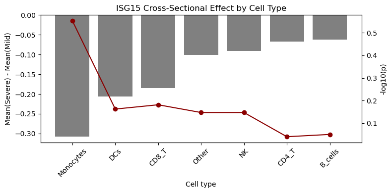
============================================================
KEY INSIGHTS
============================================================
1. Cross-sectional comparison:
- Current sample provides good power for medium-large effects
- Participant-level aggregation is critical for valid inference
2. Longitudinal limitation:
- Only 0 participants have paired observations
- Future studies need ≥10 paired per arm for DiD
3. Cell-level clustering:
- With ICC=0.10 and 6035 cells/participant:
Design effect = 604
- This is why participant-level analysis is essential
Single-Gene Cross-Sectional Check (Participant-Level)
Here, we use a focused single-gene comparison to validate cross-sectional differences at the participant level. This avoids pseudoreplication and provides an interpretable effect for one gene in a specific lineage.
[17]:
print("\n=== Single-Gene Cross-Sectional Check (Participant-Level) ===")
gene = "ISG15"
celltypes = sorted(adata.obs["lineage"].dropna().unique())
# Compute participant-level means per celltype and group
from sctrial.stats.comparisons import resolve_gene_name
gene_name = resolve_gene_name(adata, gene)
from sctrial.stats._extract import extract_gene_vector
expr = extract_gene_vector(adata, gene_name, layer="counts")
expr = np.log1p(expr)
df_expr = adata.obs[["participant_id", "severity", "lineage"]].copy()
df_expr["expr"] = expr
df_part = (
df_expr.groupby(["participant_id", "severity", "lineage"], observed=True)["expr"]
.mean()
.reset_index()
)
# Run per-celltype tests
rows = []
for ct in celltypes:
result, _ = st.compare_gene_in_celltype(
adata,
gene=gene,
celltypes=ct,
group_col="severity",
group1="Severe",
group2="Mild",
participant_col="participant_id",
celltype_col="lineage",
min_cells_per_patient=10,
min_patients_per_group=3,
)
rows.append(result)
df_res = pd.DataFrame(rows)
df_res["celltype"] = df_res["celltypes"].apply(lambda x: x[0] if isinstance(x, list) and len(x) == 1 else str(x))
display(df_res)
# Plot participant-level distributions by celltype
g = sns.catplot(
data=df_part,
x="lineage",
y="expr",
hue="severity",
kind="box",
height=4,
aspect=2.2,
palette={"Mild": "steelblue", "Severe": "coral"},
)
g.set_xticklabels(rotation=45, ha="right")
g.set_axis_labels("Cell type", f"{gene} (log1p counts)")
g.fig.suptitle(f"{gene} by Cell Type and Severity (Participant-Level)", y=1.05)
plt.tight_layout()
plt.show()
# Barplot of effect sizes with -log10(p) overlay
df_plot = df_res.dropna(subset=["p_value"]).copy()
if not df_plot.empty:
df_plot["neglog10p"] = -np.log10(df_plot["p_value"].clip(lower=1e-12))
df_plot = df_plot.sort_values("delta")
fig, ax1 = plt.subplots(figsize=(8, 4))
ax1.bar(df_plot["celltype"], df_plot["delta"], color="gray")
ax1.axhline(0, color="black", linewidth=0.8)
ax1.set_ylabel("Mean(Severe) - Mean(Mild)")
ax1.set_xlabel("Cell type")
ax1.set_title(f"{gene} Cross-Sectional Effect by Cell Type")
ax1.tick_params(axis="x", rotation=45)
ax2 = ax1.twinx()
ax2.plot(df_plot["celltype"], df_plot["neglog10p"], color="darkred", marker="o")
ax2.set_ylabel("-log10(p)")
plt.tight_layout()
plt.show()
else:
print("No valid p-values available for plotting.")
=== Single-Gene Cross-Sectional Check (Participant-Level) ===
| gene | celltypes | group1 | group2 | n_group1 | n_group2 | mean_group1 | mean_group2 | delta | p_value | celltype | |
|---|---|---|---|---|---|---|---|---|---|---|---|
| 0 | ISG15 | [B_cells] | Severe | Mild | 10 | 23 | 1.055019 | 1.117754 | -0.062736 | 0.890947 | B_cells |
| 1 | ISG15 | [CD4_T] | Severe | Mild | 11 | 23 | 0.349447 | 0.416083 | -0.066635 | 0.912062 | CD4_T |
| 2 | ISG15 | [CD8_T] | Severe | Mild | 11 | 23 | 0.474734 | 0.659512 | -0.184778 | 0.658669 | CD8_T |
| 3 | ISG15 | [DCs] | Severe | Mild | 10 | 21 | 0.699574 | 0.906295 | -0.206721 | 0.688090 | DCs |
| 4 | ISG15 | [Monocytes] | Severe | Mild | 10 | 16 | 0.936911 | 1.244191 | -0.307280 | 0.279944 | Monocytes |
| 5 | ISG15 | [NK] | Severe | Mild | 11 | 23 | 0.480815 | 0.571585 | -0.090770 | 0.712779 | NK |
| 6 | ISG15 | [Other] | Severe | Mild | 11 | 23 | 0.242101 | 0.342777 | -0.100676 | 0.712779 | Other |
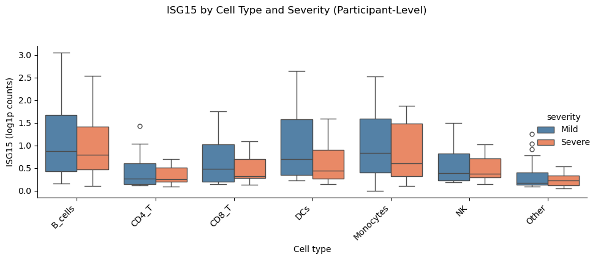
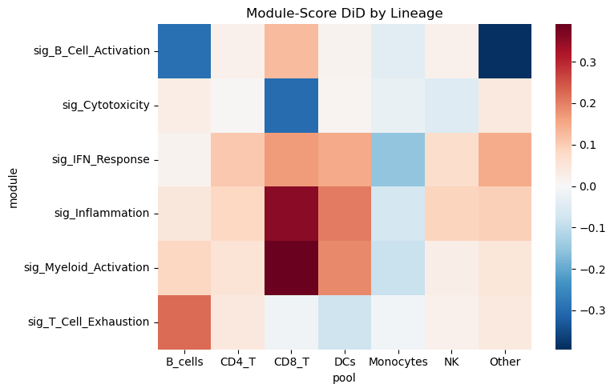
Module-Score Pseudobulk DiD by Lineage
Here, we collapse each participant×visit×lineage into a pseudobulk mean of module scores, then compute DiD per lineage. This highlights which lineages drive the severity-associated changes.
[18]:
if signature_cols:
# Choose visit pair with best paired coverage across arms
visit_levels = sorted(adata.obs["dfo_bin"].dropna().unique())
best_pair = None
best_score = -1
min_per_arm = 2
for v1, v2 in itertools.combinations(visit_levels, 2):
wide = (
adata.obs
.groupby(["participant_id", "dfo_bin"], observed=True)
.size()
.unstack(fill_value=0)
)
paired_ids = wide[(wide.get(v1, 0) > 0) & (wide.get(v2, 0) > 0)].index
if len(paired_ids) == 0:
continue
arm_counts = (
adata.obs[adata.obs["participant_id"].isin(paired_ids)]
.groupby("severity")["participant_id"]
.nunique()
)
if len(arm_counts) < 2:
continue
min_arm = min(arm_counts.get("Severe", 0), arm_counts.get("Mild", 0))
if min_arm < min_per_arm:
continue
if min_arm > best_score:
best_score = min_arm
best_pair = (v1, v2)
allow_unpaired = False
if best_pair is None:
print("No visit pair has >=2 paired participants per arm. DiD may be underpowered.")
visits_pair = tuple(visit_levels[:2])
allow_unpaired = True
else:
visits_pair = best_pair
print("Using visits:", visits_pair)
# Filter lineages with enough paired participants for the chosen pair
paired_counts = (
adata.obs[adata.obs["dfo_bin"].isin(visits_pair)]
.groupby(["participant_id", "lineage"])["dfo_bin"]
.nunique()
.reset_index(name="n_visits")
)
paired_lineages = paired_counts[paired_counts["n_visits"] >= 2]["lineage"].value_counts()
keep_lineages = paired_lineages[paired_lineages >= 2].index.tolist()
if not keep_lineages:
keep_lineages = sorted(adata.obs["lineage"].dropna().unique())
print("Lineages with paired participants:", keep_lineages)
adata_use = adata[adata.obs["lineage"].isin(keep_lineages)].copy()
pb_mod = st.module_score_pseudobulk(
adata_use,
module_cols=signature_cols,
design=design,
visits=visits_pair,
pool_col="lineage",
min_cells_per_group=1,
)
display(pb_mod.head())
def _run_mod_did(pb_df, allow_unpaired_flag):
return st.module_score_did_by_pool(
pb_df,
design=design,
visits=visits_pair,
min_paired=2,
n_perm=300,
seed=SEED,
fdr_within="module",
allow_unpaired=allow_unpaired_flag,
)
res_mod = _run_mod_did(pb_mod, allow_unpaired)
if res_mod.empty and not allow_unpaired:
print("No valid paired lineage-level DiD results. Retrying with unpaired OLS DiD.")
res_mod = _run_mod_did(pb_mod, True)
if res_mod.empty:
print("No valid lineage-level DiD results. Falling back to pooled lineage.")
pb_all = st.module_score_pseudobulk(
adata_use,
module_cols=signature_cols,
design=design,
visits=visits_pair,
pool_map={"All_Lineages": keep_lineages},
celltype_col="lineage",
min_cells_per_group=1,
)
res_mod = st.module_score_did_by_pool(
pb_all,
design=design,
visits=visits_pair,
min_paired=2,
n_perm=300,
seed=SEED,
fdr_within=None,
allow_unpaired=True,
)
if not res_mod.empty:
display(res_mod.sort_values("p_DiD").head(20))
pivot = res_mod.pivot(index="module", columns="pool", values="beta_DiD")
plt.figure(figsize=(8, 5))
sns.heatmap(pivot, cmap="RdBu_r", center=0)
plt.title("Module-Score DiD by Lineage")
plt.tight_layout()
plt.show()
else:
print("No valid module-score DiD results after fallback.")
else:
print("No module scores available for pseudobulk DiD.")
No visit pair has >=2 paired participants per arm. DiD may be underpowered.
Using visits: ('DFO_0-7', 'DFO_15+')
Lineages with paired participants: ['B_cells', 'CD4_T', 'CD8_T', 'DCs', 'Monocytes', 'NK', 'Other']
| participant_id | dfo_bin | severity | pool | module | module_score | n_cells | |
|---|---|---|---|---|---|---|---|
| 0 | AP1 | DFO_15+ | Severe | B_cells | sig_B_Cell_Activation | 0.899707 | 65 |
| 1 | AP1 | DFO_15+ | Severe | B_cells | sig_Cytotoxicity | -0.434216 | 65 |
| 2 | AP1 | DFO_15+ | Severe | B_cells | sig_IFN_Response | -0.220464 | 65 |
| 3 | AP1 | DFO_15+ | Severe | B_cells | sig_Inflammation | -0.356539 | 65 |
| 4 | AP1 | DFO_15+ | Severe | B_cells | sig_Myeloid_Activation | -0.215178 | 65 |
| pool | module | mean_delta_treated | mean_delta_control | beta_DiD | p_DiD | p_treated | p_control | n_units | FDR_DiD | |
|---|---|---|---|---|---|---|---|---|---|---|
| 10 | CD4_T | sig_Myeloid_Activation | 0.033535 | -0.022402 | 0.055937 | 0.005882 | 1.449762e-02 | 1.434237e-01 | 18 | 0.041172 |
| 39 | Other | sig_Inflammation | 0.063717 | -0.031188 | 0.094905 | 0.060225 | 9.329306e-02 | 3.733759e-01 | 18 | 0.421574 |
| 0 | B_cells | sig_B_Cell_Activation | 0.023329 | 0.316794 | -0.293465 | 0.088894 | 7.926669e-01 | 3.061661e-02 | 18 | 0.287393 |
| 12 | CD8_T | sig_B_Cell_Activation | 0.084310 | -0.041164 | 0.125474 | 0.090422 | 1.523519e-01 | 3.957648e-01 | 18 | 0.287393 |
| 36 | Other | sig_B_Cell_Activation | -0.062262 | 0.331850 | -0.394112 | 0.123168 | 7.676010e-01 | 3.764963e-02 | 18 | 0.287393 |
| 9 | CD4_T | sig_Inflammation | 0.025533 | -0.057082 | 0.082616 | 0.148379 | 5.668223e-01 | 1.351592e-01 | 18 | 0.454896 |
| 22 | DCs | sig_Myeloid_Activation | 0.342057 | 0.152192 | 0.189865 | 0.163751 | 4.232195e-03 | 4.771629e-02 | 18 | 0.306489 |
| 40 | Other | sig_Myeloid_Activation | 0.032736 | -0.017218 | 0.049954 | 0.177815 | 2.537165e-01 | 4.908473e-01 | 18 | 0.306489 |
| 5 | B_cells | sig_T_Cell_Exhaustion | 0.161459 | -0.061516 | 0.222974 | 0.186234 | 2.114484e-01 | 5.923986e-01 | 18 | 0.906928 |
| 33 | NK | sig_Inflammation | 0.108501 | 0.020546 | 0.087955 | 0.194956 | 2.098208e-02 | 6.829833e-01 | 18 | 0.454896 |
| 16 | CD8_T | sig_Myeloid_Activation | 0.125033 | -0.265537 | 0.390571 | 0.204754 | 6.135455e-01 | 1.815146e-01 | 18 | 0.306489 |
| 4 | B_cells | sig_Myeloid_Activation | 0.051385 | -0.035334 | 0.086719 | 0.218921 | 3.390866e-01 | 4.643997e-01 | 18 | 0.306489 |
| 15 | CD8_T | sig_Inflammation | 0.158560 | -0.197558 | 0.356118 | 0.291181 | 6.090837e-01 | 2.486603e-01 | 18 | 0.509567 |
| 14 | CD8_T | sig_IFN_Response | -0.576169 | -0.744328 | 0.168159 | 0.305052 | 7.526322e-08 | 3.597705e-09 | 18 | 0.735324 |
| 38 | Other | sig_IFN_Response | -0.369377 | -0.517288 | 0.147911 | 0.305084 | 4.895593e-09 | 4.882568e-05 | 18 | 0.735324 |
| 23 | DCs | sig_T_Cell_Exhaustion | 0.103681 | 0.183520 | -0.079840 | 0.316942 | 1.868072e-01 | 7.134282e-09 | 18 | 0.906928 |
| 3 | B_cells | sig_Inflammation | -0.011176 | -0.056984 | 0.045808 | 0.405408 | 7.452527e-01 | 1.890818e-01 | 18 | 0.567571 |
| 25 | Monocytes | sig_Cytotoxicity | -0.039192 | -0.010548 | -0.028644 | 0.410010 | 1.600545e-01 | 6.390095e-01 | 18 | 0.967153 |
| 13 | CD8_T | sig_Cytotoxicity | -0.280620 | 0.020920 | -0.301540 | 0.429192 | 4.224492e-01 | 9.144025e-01 | 18 | 0.967153 |
| 11 | CD4_T | sig_T_Cell_Exhaustion | 0.049776 | 0.007541 | 0.042235 | 0.440004 | 2.531422e-01 | 8.327001e-01 | 18 | 0.906928 |

Parallel Trends Visualization (Early Visits)
Here we visualize pre-treatment trends across early visits to assess whether arms move in parallel before divergence. This is a diagnostic, not a formal test.
[19]:
if signature_cols:
try:
st.plot_parallel_trends(
adata,
feature=signature_cols[0],
design=design,
visits=visits_pair,
)
plt.tight_layout()
plt.show()
except Exception as e:
print(f'Parallel trends plot skipped: {e}')
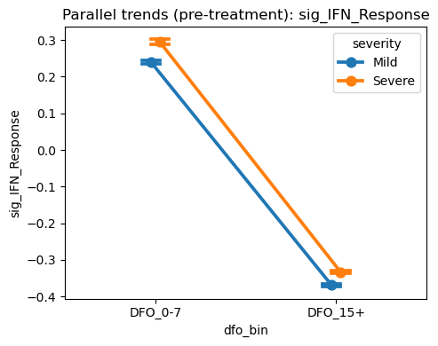